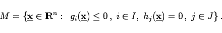

Inhalt Index DeskTop Bronstein

 Optimierung Nichtlineare Optimierung Problemstellung und theoretische Grundlagen Problemstellung
Optimierung Nichtlineare Optimierung Problemstellung und theoretische Grundlagen Problemstellung


Unter einem nichtlinearen Optimierungsproblem werden Aufgaben der Grundform
|  | (18.32) |
Die Aufgabe besteht in der Bestimmung von Minimalpunkten.